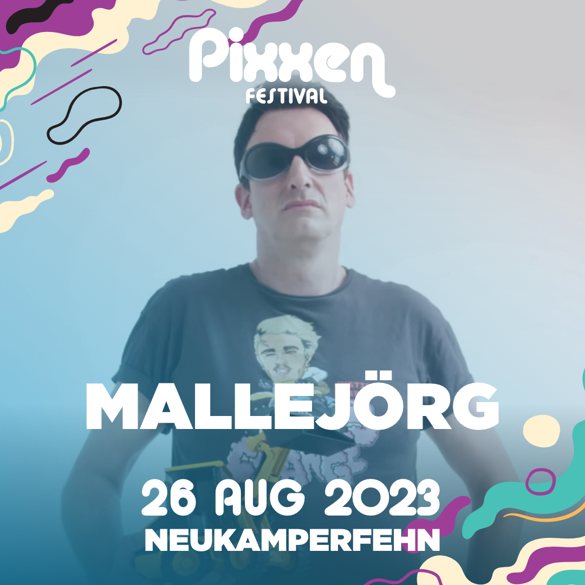
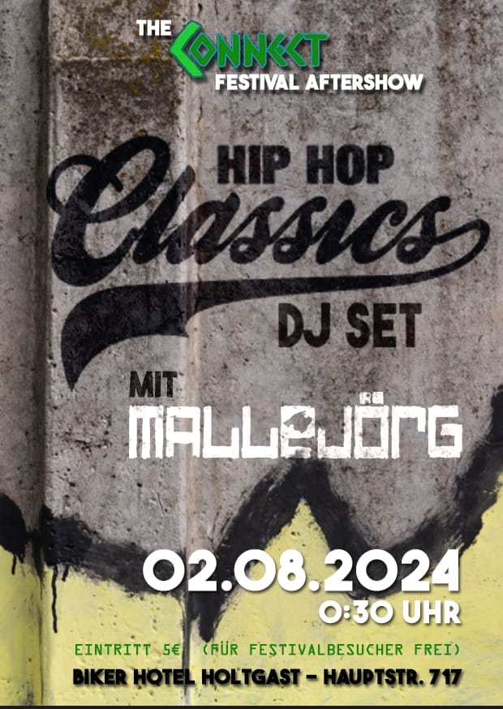
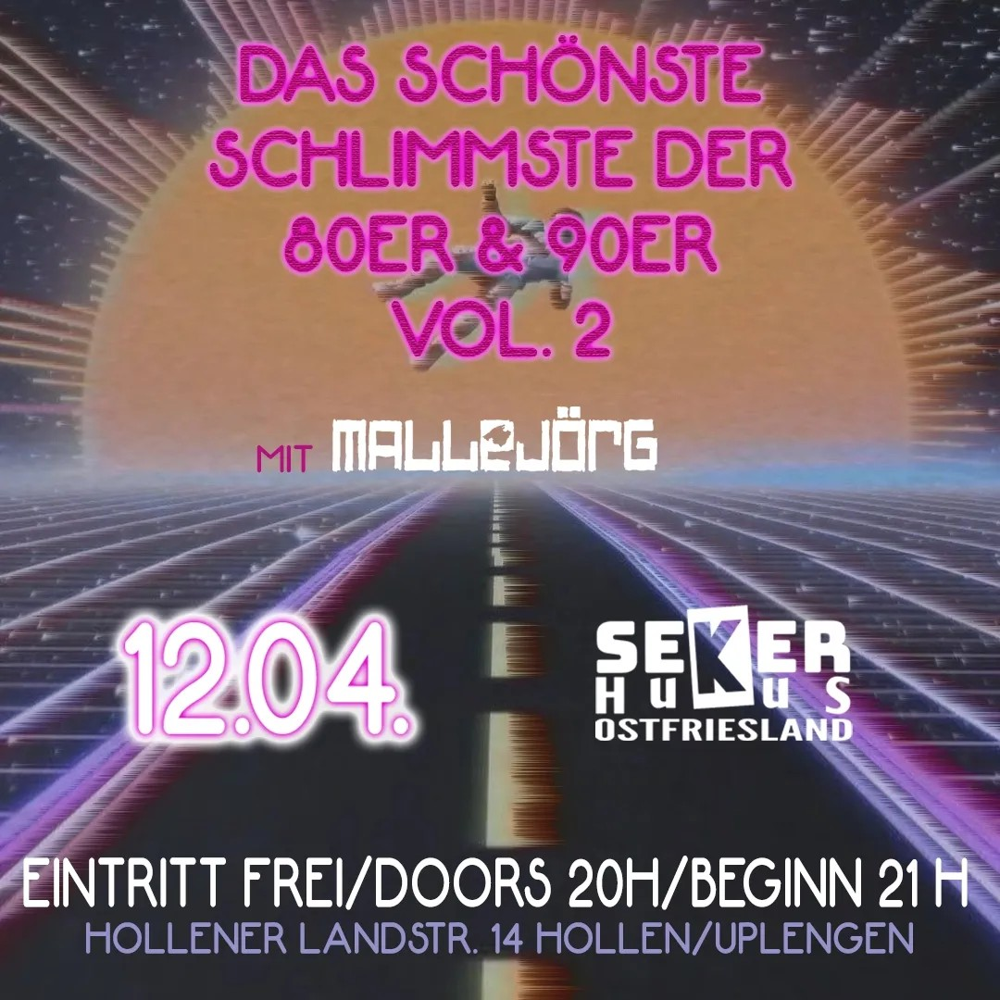
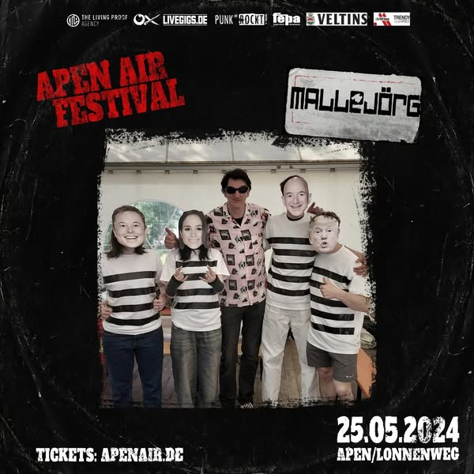
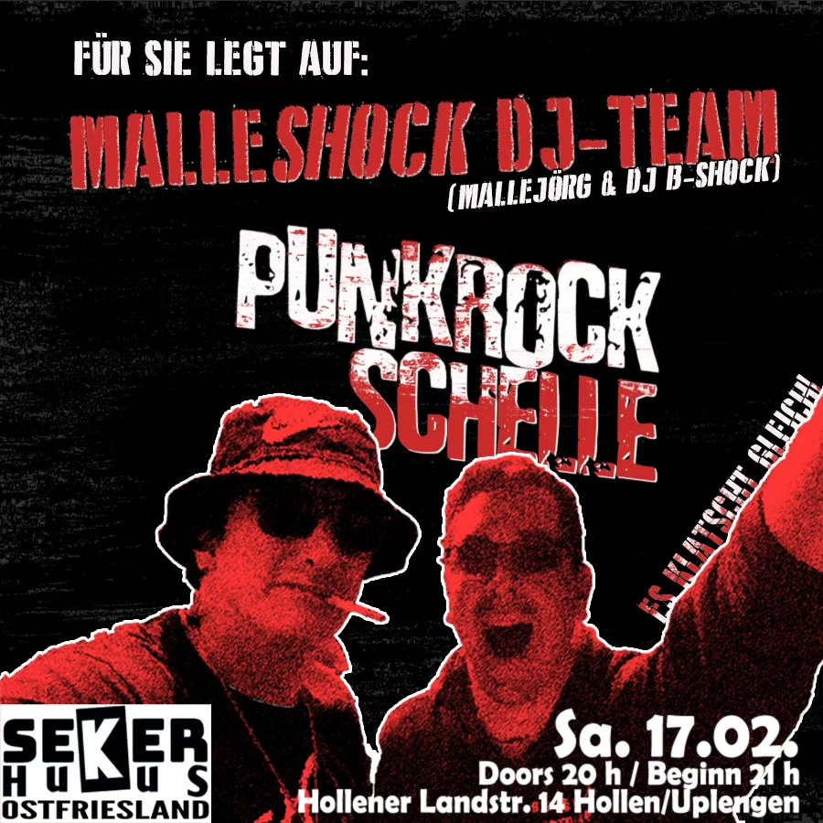

Mallejörg liefert kleine und große DJ-Sets aus den Genres Elektro, Hip-Hop, 80er/90er-Hits oder Punkrock. Für 20 Minuten oder auch einen ganzen Abend. Inklusive Schnapsrunde, Ballons, Konfettikanone und trashiger Bühnendeko.
Der perfekte Stilbruch für Festivals in den Umbaupausen oder für den Aftershow-Abriss oder als Preshow / Aftershow-Act. Trash as trash can!
Keine Mallehits. Keine sexistischen, rassistischen oder homophoben Inhalte. Einfach nur Party. Neben privaten Shows trat er u.a. beim APEN AIR Festival, beim Connect Festival oder beim Pixxen Festival auf.
Na, wo isser denn?
01.08.2025 - Connect Festival, Apen, Aftershow Tickets
29.08.2025 - Don't Panic, Essen, Aftershow Chefdenker <
30.08.2025 - Seker HuUs, Uplengen-Hollen, Aftershow Chefdenker Tickets
Impressionen


Vergangene Termine (Auszug)





Booking / Social / Pressepaket